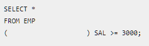
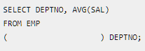
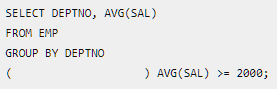
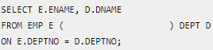

01. 다음 설명에 해당하는 SQL 명령어의 분류를 작성하시오.
데이터베이스의 테이블과 같은 객체의 구조를 생성, 변경, 삭제할 때 사용하는 명령어이다.
CREATE / ALTER / DROP
정답 : ( )
02. 다음 설명에 해당하는 SQL 명령어의 분류를 작성하시오.
테이블에 저장된 데이터를 조회하거나 새로운 데이터를 삽입하고,
기존 데이터를 수정 또는 삭제할 때 사용한다.
SELECT / INSERT / UPDATE / DELETE
정답 : ( )
03. 다음 설명에 해당하는 데이터베이스의 키를 작성하시오.
04. 다음 설명에 해당하는 데이터베이스의 키를 작성하시오.
05. 다음 SQL문이 급여(SAL)가 3000 이상인 사원만 조회하도록 빈칸에 알맞은 구문을 작성하시오.

06. 다음 SQL문이 부서별 평균 급여를 조회하도록 빈칸에 알맞은 구문을 작성하시오.

07. 다음 SQL문이 부서별 평균 급여가 2000 이상인 부서만 조회하도록 빈칸에 알맞은 구문을 작성하시오.

08. 다음 SQL문이 EMP 테이블과 DEPT 테이블을 DEPTNO를 기준으로 연결하여 조회하도록 빈칸에 알맞은 구문을 작성하시오.
